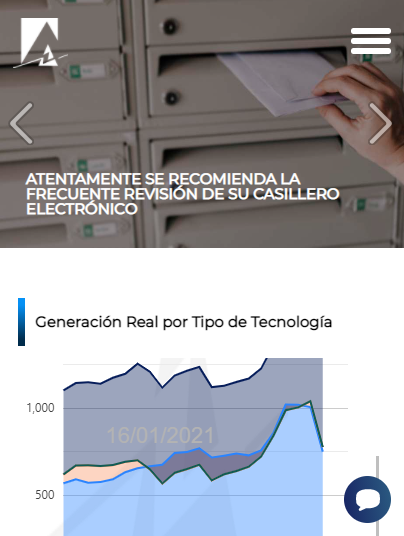
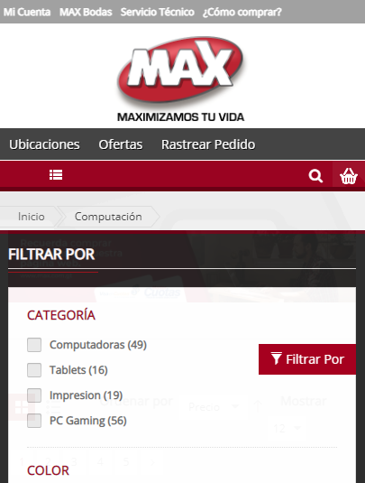
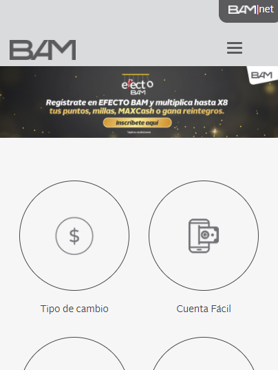

Visual Hierarchy
AMM - Guatemala
This company is dedicated to the study, planning, operation and settlement of the Guatemalan electricity market. The visual hierarchy is given, the most important part is the last news at the top (ad carousel) and the application menu, then you can go down to see the graphs of the composition of electricity generation, and below in the footer the secondary or complementary links.
Hick's Law
Tiendas Max - Guatemala
This company is dedicated to the sale of electronic equipment and household appliances in Guatemala. This page is practically an E-commerce. Hick's law is applied by putting a tool to users so that they can filter the products shown in the different catalogs and categories, without these filters people would have to navigate through all the results pages until you find the one you want.
Contrast
BAM - Guatemala
This company is one of the best banks in Guatemala. Their level of advertising and marketing is enormous, and their website is no exception. The use of contrast is evident, they have dark tones in the background colors and light in others, the use of gray and white is phenomenal on their website.